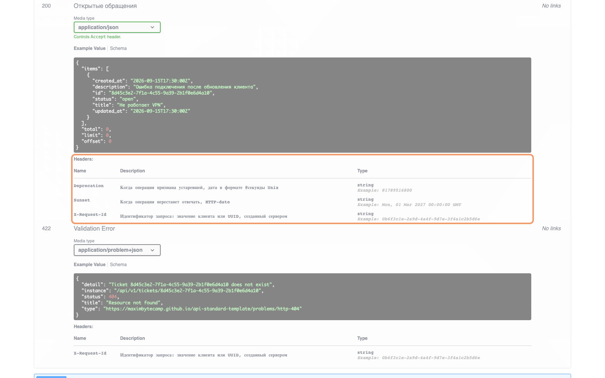
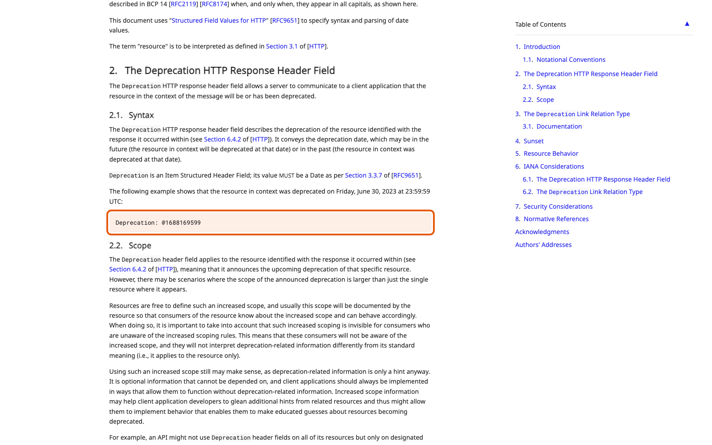

Справочник «Стандартизация HTTP API» · модуль 5 · Версии и изменения
Глава 5.3
Deprecation
и Sunset
Операцию, которой пользуются клиенты, не удаляют сразу: сначала объявляют дату отключения и дают время на переход. В этой главе разобраны пять этапов, через которые проходит операция, и два заголовка, которые предупреждают клиента в каждом ответе.
- Категория
- Версии
- Уровень
- Средний
- Связанные главы
- 5.2 Breaking changes · 5.4 CHANGELOG и ADR · 4.3 Заголовки контракта
- Зачем это знать
- Чтобы убирать лишнее из API, не ломая чужую работу внезапно
§1Пять этапов жизни операции
В учебном проекте порядок записан одной строкой в docs/VERSIONING.md:
ACTIVE → DEPRECATED → MIGRATION PERIOD → SUNSET → REMOVED
Между решением убрать операцию и её отключением всегда лежит объявленный срок. Клиент узнаёт этот срок из ответов самого API, а не только из рассылки или документации.
§2Шаг 1: пометка в описании
Первое, что делают, — помечают операцию в описании и объясняют, чем её заменить.
Zalando, правило 187 «MUST reflect deprecation in API specifications»правила компании
«the producers must set deprecated: true for the affected element and add further explanation to the description section of the API specification. If a future shut down is planned, the producer must provide a sunset date and document in details what consumers should use instead and how to migrate.»
Перевод. Владелец API должен указать deprecated: true у затронутого элемента и добавить пояснение в раздел описания спецификации. Если планируется отключение, он должен указать дату отключения и подробно описать, чем потребителям пользоваться вместо него и как перейти.
Обратите внимание, что правило требует трёх вещей сразу: пометки, замены и даты. По пометке без указания замены клиент не может перейти на другую операцию.
@router.get(
"/open",
deprecated=True,
summary="Открытые обращения (устаревшая операция)",
description="Используйте GET /api/v1/tickets?status=open. Отключение 2027-03-01.",
operation_id="listOpenTicketsDeprecated",
)
deprecated — заметно ещё до раскрытия операции. Это результат одной строки deprecated=True в коде.§3Шаг 2: заголовки в каждом ответе
Пометки в описании недостаточно: клиентская программа документацию не перечитывает. Поэтому предупреждение помещают в каждый ответ устаревшей операции.
Zalando, правило 189 «SHOULD add Deprecation and Sunset header to responses»правила компании
«During the deprecation phase, the producer should add a Deprecation: <timestamp> (see RFC 9745 section 2) and - if also planned - a Sunset: <date-time> (see RFC 8594 section 3) header on each response affected by a deprecated element»
Перевод. На этапе устаревания владелец API должен добавлять заголовок Deprecation со временем (RFC 9745, раздел 2) и — если отключение тоже запланировано — заголовок Sunset с датой (RFC 8594, раздел 3) в каждый ответ, затронутый устаревшим элементом.
Дальше клиент может действовать сам: библиотека видит заголовок и пишет предупреждение в журнал, мониторинг считает, сколько вызовов устаревших операций осталось до даты отключения. Ни то ни другое невозможно, если предупреждение есть только в документации.
§4Deprecation: RFC 9745
Заголовок отвечает на вопрос «с какого момента операция считается устаревшей». Формат непривычный: знак @ и число секунд Unix.
deprecation: @1789516800
@ и целое число секунд от начала эпохи Unix.формат
§5Sunset: RFC 8594
Второй заголовок отвечает на вопрос «когда перестанет работать». Формат здесь обычный — дата HTTP.
sunset: Mon, 01 Mar 2027 00:00:00 GMT
- статус: Standards Track
- формат:
@1789516800 - смысл: с какого момента устарело
- статус: Informational
- формат:
Mon, 01 Mar 2027 00:00:00 GMT - смысл: когда перестанет отвечать
Статус Informational означает, что документ описывает сложившуюся практику, а не устанавливает обязательное требование. Пользоваться заголовком это не мешает, но в своём API Style Guide такие случаи отмечают отдельно: когда стандарт необязателен, единственным источником правил остаётся собственный документ проекта. Так же обстоит дело с Idempotency-Key из главы 4.3.
§6Пример целиком
Ниже — настоящий ответ учебного сервиса на вызов устаревшей операции.
HTTP/1.1 200
x-request-id: f308afeb-842f-4f14-918d-49be7986e4db
deprecation: @1789516800
sunset: Mon, 01 Mar 2027 00:00:00 GMT
access-control-expose-headers: ETag, Location, X-Request-Id, Retry-After,
Deprecation, Sunset, X-RateLimit-Limit, …
content-type: application/json
{ "items": [ … ], "total": 3, "limit": 1, "offset": 0 }- Код
200. Операция работает как прежде — устаревание ничего не сломало. - Два заголовка предупреждения. Программа-клиент может их прочитать и отреагировать.
- Оба заголовка перечислены в
expose_headers. Иначе веб-клиент их бы не увидел — та же ловушка, что разобрана в главе 4.3. - Тело не изменилось. Клиент, который не собирается ничего делать, продолжает работать до даты отключения.
И четвёртый шаг — запись в журнале изменений, в разделе Deprecated, с указанием замены и даты. Об этом — следующая глава.
- GET /api/v1/tickets/open — используйте GET /api/v1/tickets?status=open. Ответ содержит Deprecation и Sunset; отключение 2027-03-01.
§7Сколько длится период миграции
Стандарты срок не задают — его определяет владелец API, исходя из того, кто его клиенты и как быстро они обновляются.
| Кто клиент | Разумный срок | Почему |
|---|---|---|
| Своя же команда, один сервис | дни | Обновление выкатывается вместе с изменением |
| Соседние команды в компании | недели или месяц | Нужно вписать работу в чужие планы |
| Мобильное приложение | месяцы | Пользователи обновляют приложение неделями, часть — никогда |
| Публичный API | год и более | Клиентов нельзя ни собрать, ни заставить |
В учебном проекте записано «не меньше одного семестра учебного стенда» — срок привязан к тому, как живёт этот конкретный API. Для сравнения: GitHub обещает поддерживать старые редакции не менее двух лет. Сроки отличаются, требование одно — срок объявлен заранее и в явном виде.
Объявив Sunset, вы приняли на себя обязательство: до этой даты операция работает. Перенести дату вперёд (дать больше времени) можно всегда; сдвинуть назад — значит нарушить контракт, даже если формально код ответа не изменился.
§8Частые ошибки
404 в рабочем контуре. Между решением и удалением обязан быть объявленный срок.Deprecation и Sunset, и предупреждение до него не дойдёт.§9Проверьте себя
- Назовите пять этапов жизни операции и скажите, на каком из них клиент впервые получает предупреждение.
- Почему пометки
deprecated: trueв описании недостаточно? - Чем отличаются заголовки
DeprecationиSunsetпо смыслу, формату и статусу документа? - Что означает значение
@1789516800и почему оно записано именно так? - Почему объявление операции устаревшей — совместимое изменение, а её удаление — нет?
- От чего зависит длительность периода миграции? Приведите два разных случая.
ACTIVEDEPRECATEDMIGRATION PERIODSUNSETREMOVEDdeprecated: trueуказать заменуобъявить датузаголовки в ответахзапись в CHANGELOGDeprecation: @секундыSunset: HTTP-dateRFC 9745 — Standards TrackRFC 8594 — InformationalZalando 187, 189Справочник «Стандартизация HTTP API» · модуль 5 · глава 5.3Макаров Максим Николаевич